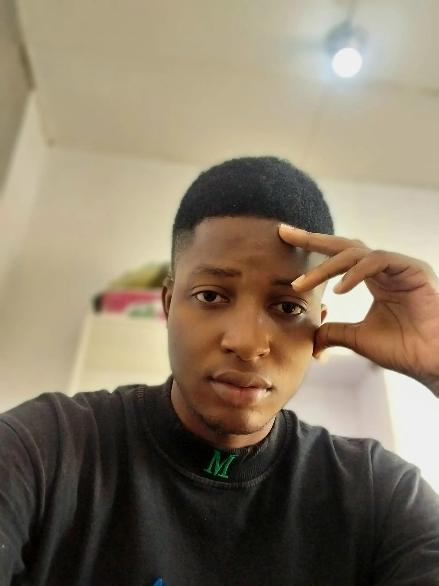

OSOKO ODUNAYO | WDD 130
Hi! My name is Osoko Odunayo and I'm a passionate and resilient individual pursuing a career in both fashion design and software development. While currently enrolled in an online program with BYU Pathway, i have shown remarkable dedication in my studies and not letting mg business affects my concentrationwhen studying